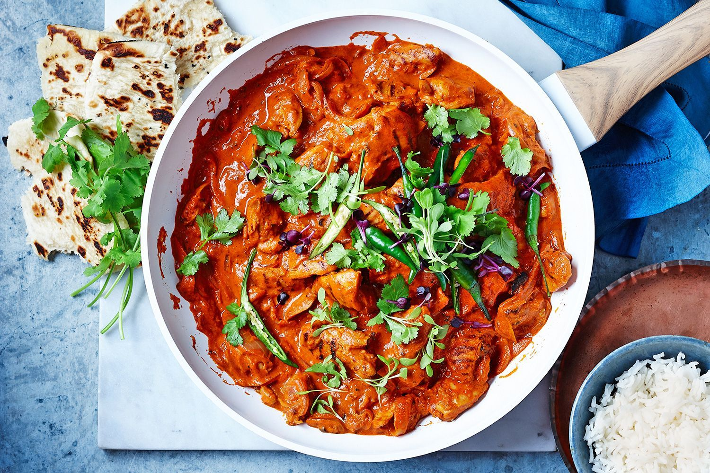

Iam prem rakesh currently pursuing masters in computer science at NWMS and Iam from Hyderabad India.
I love butter chicken because it's incredibly delicious! The rich, creamy tomato-based sauce with that perfect blend of butter, cream, and spices just hits the spot. It's not too spicy, so it's great for folks who don't like their food too hot. The chicken is tender and flavorful since it's marinated in yogurt and spices before cooking.And it's not just about taste – butter chicken has cultural significance in India and is beloved around the world. You can even make it at home with your own twists and tweaks to suit your taste buds. So, yeah, butter chicken is simply irresistible!
